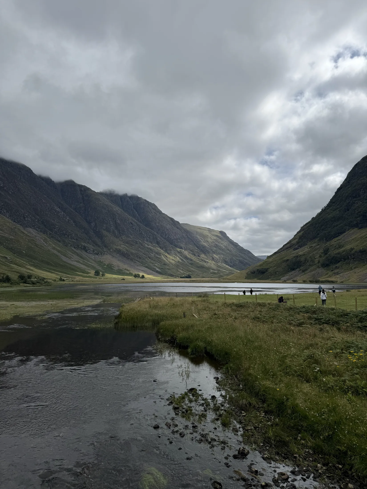

Landscape, weather, myth and memory — reflections, music, films and stories connected to travelling through Scotland.
The strongest memories are often not single sights, but the feeling around them — rain on windows, long Highland roads, old stories, whisky warmth and music that seems built from landscape.
You've heard a lot on tour. This is a short list of the books, films and music that tend to help it land — the ones I'd genuinely point you towards on the coach home.
Reading
Scotland in the 18th century went from one of Europe’s poorest nations to a place that produced the economists, engineers and philosophers who helped build the modern world. If you left Edinburgh thinking — how did all of this come from here? — this is the answer.
The event that emptied the glens — communities displaced, thousands sent to Canada, Australia and beyond. If you stood in the Highlands and felt the emptiness without quite being able to explain it, this is what happened there. Prebble’s interpretation has been questioned by later historians, but as a narrative account it’s still the most powerful version of this story.
At some point on tour most people start wondering: how much of this is ancient, and how much was invented? Tartans, clans, the whole romantic Highland image — a lot of it is far more recent than it looks. This takes that apart with wit and does it enjoyably.
Watching
Jacobites, Culloden, clan loyalties, the Highlands — all the threads from tour running through one epic series. Historically dramatised rather than strictly accurate, but the locations are real and the period comes alive. Huge with guests who’ve done the Jacobite route.
A corporate American arrives in a remote Scottish coastal village to negotiate a deal and slowly gets pulled in by the place. Quiet, funny and surprisingly warm — one of the films that gets something genuinely true about Scotland.
Clan honour, betrayal and the Highlands in the early 18th century. Less well-known than Braveheart but more historically grounded and, honestly, a better film.
Listening
The song most likely to bring Scotland back when you’re home and unpacked. Written about longing for home — it lands differently after you’ve been there.
Jacobite melancholy and the western islands in two minutes. The Outlander version introduced it to a new generation — the traditional version is worth finding too.
Scotland’s unofficial national anthem — Robert the Bruce, Bannockburn, independence. You’ll have heard it. It means more now.
Music tied to Highland roads, ferries, weather, whisky bars and long northern light.